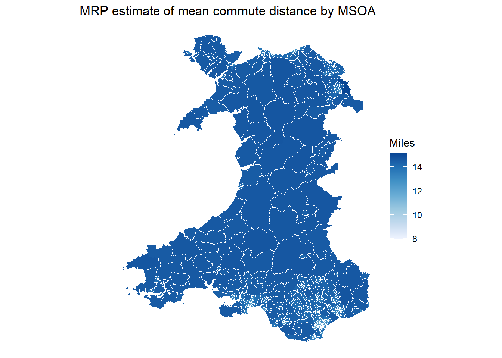
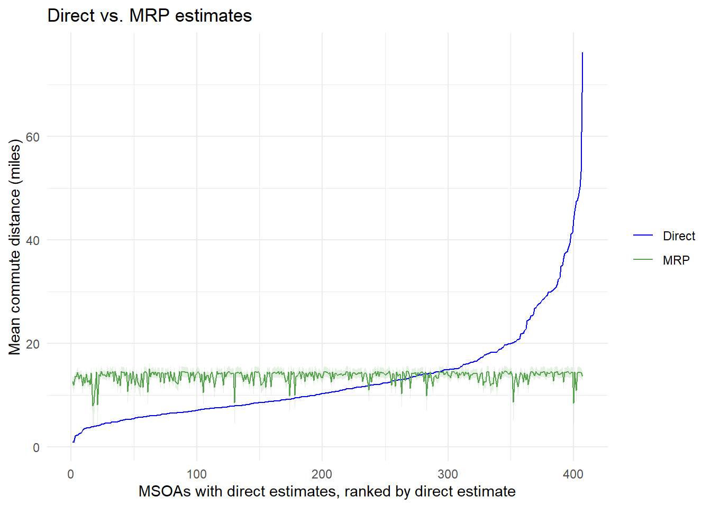

[WIP] Tutorial: Estimation with population cells (MRP)
Multilevel Regression and Poststratification (MRP) is a unit-level SAE workflow for cases where the population auxiliary data are available as cross-tabulated cells. The model is fitted to survey microdata, using predictors that are also represented in the population cells. Predictions are then made for each population cell and aggregated to the target geography using the cell counts.
For this tutorial, the estimand is the mean commute distance among commuters by MSOA, via the survey indicator commute_distance.
1 Population Cells
The bundled UK Census 2021 bulk tables are aggregate MSOA tables downloaded from Nomis. They provide separate marginal tables for variables that are useful for commute modelling:
Predictor
Source table
Use in this workbook
age_group
TS007A age by five-year age bands
Unit-level categorical predictor
sex
TS008 sex
Unit-level categorical predictor
car_access
TS045 car or van availability
Unit-level categorical predictor, using household car availability as a proxy
commuter population total
TS061 method of travel to work
Population total for commuters, excluding people working mainly at or from home
cov_pop_density
TS006 population density
Area-level predictor in the MRP model
Warning
The population cells created here are synthetic. The Census tables used here do not provide the observed joint distribution of age, sex, and car access among commuters by MSOA.
The code therefore combines marginal tables under simplifying assumptions. This is useful for showing the file shape and MRP workflow, but it is not a substitute for observed cross-tabulated population counts, administrative registers, or a carefully constructed synthetic population.
The commute-distance benchmark table, TS058, is not used as a model predictor because it directly measures a closely related outcome. It is reserved for validation.
The target population is commuters. We approximate the MSOA commuter total from TS061 as residents in employment minus residents who work mainly at or from home. This total is then allocated across age, sex, and car-access categories using the available marginal distributions.
Code
age_margins <-read_census("ts007a") |>transmute( domain_id,age_16_24 =`Age: Aged 15 to 19 years`+`Age: Aged 20 to 24 years`,age_25_44 =`Age: Aged 25 to 29 years`+`Age: Aged 30 to 34 years`+`Age: Aged 35 to 39 years`+`Age: Aged 40 to 44 years`,age_45_64 =`Age: Aged 45 to 49 years`+`Age: Aged 50 to 54 years`+`Age: Aged 55 to 59 years`+`Age: Aged 60 to 64 years`,age_65_plus =`Age: Aged 65 to 69 years`+`Age: Aged 70 to 74 years`+`Age: Aged 75 to 79 years`+`Age: Aged 80 to 84 years`+`Age: Aged 85 years and over` ) |>pivot_longer(cols =starts_with("age_"),names_to ="age_group",values_to ="age_count" ) |>group_by(domain_id) |>mutate(age_prop = age_count /sum(age_count, na.rm =TRUE)) |>ungroup() |>select(domain_id, age_group, age_prop)sex_margins <-read_census("ts008") |>transmute( domain_id,sex_female =`Sex: Female; measures: Value`,sex_male =`Sex: Male; measures: Value` ) |>pivot_longer(cols =starts_with("sex_"),names_to ="sex",values_to ="sex_count" ) |>group_by(domain_id) |>mutate(sex_prop = sex_count /sum(sex_count, na.rm =TRUE)) |>ungroup() |>select(domain_id, sex, sex_prop)car_margins <-read_census("ts045") |>transmute( domain_id,no_car_access =`Number of cars or vans: No cars or vans in household`,car_access =`Number of cars or vans: 1 car or van in household`+`Number of cars or vans: 2 cars or vans in household`+`Number of cars or vans: 3 or more cars or vans in household` ) |>pivot_longer(cols =c(no_car_access, car_access),names_to ="car_access",values_to ="car_count" ) |>group_by(domain_id) |>mutate(car_prop = car_count /sum(car_count, na.rm =TRUE)) |>ungroup() |>select(domain_id, car_access, car_prop)domain_sizes <-read_census("ts061") |>transmute( domain_id,domain_size =`Method of travel to workplace: Total: All usual residents aged 16 years and over in employment the week before the census`,work_from_home =`Method of travel to workplace: Work mainly at or from home`,commuter_total =pmax(domain_size - work_from_home, 0) ) |>select(domain_id, domain_size, work_from_home, commuter_total)population_cells <- age_margins |>inner_join(sex_margins, by ="domain_id") |>inner_join(car_margins, by ="domain_id") |>left_join(domain_sizes, by ="domain_id") |>mutate(pop_count = commuter_total * age_prop * sex_prop * car_prop,cell_id =paste(domain_id, age_group, sex, car_access, sep ="_") ) |>select(cell_id, domain_id, age_group, sex, car_access, pop_count) |>filter(pop_count >0)head(population_cells)
cell_id
domain_id
age_group
sex
car_access
pop_count
W02000001_age_16_24_sex_female_no_car_access
W02000001
age_16_24
sex_female
no_car_access
20.80138
W02000001_age_16_24_sex_female_car_access
W02000001
age_16_24
sex_female
car_access
131.14090
W02000001_age_16_24_sex_male_no_car_access
W02000001
age_16_24
sex_male
no_car_access
20.47237
W02000001_age_16_24_sex_male_car_access
W02000001
age_16_24
sex_male
car_access
129.06667
W02000001_age_25_44_sex_female_no_car_access
W02000001
age_25_44
sex_female
no_car_access
41.49758
W02000001_age_25_44_sex_female_car_access
W02000001
age_25_44
sex_female
car_access
261.61864
2 Survey Microdata
The microdata preparation workbook exports ind_weight_commute_distance.csv with the outcome, weight, estimation area, and the same categorical predictors used in the population cells.
Code
survey_indicator_commute <-read_csv(file.path(base_path, "ind_weight_commute_distance.csv"),show_col_types =FALSE)required_predictors <-c("age_group", "sex", "car_access")if (!all(required_predictors %in%names(survey_indicator_commute))) {stop("Run the Microdata Preparation workbook first so the commute indicator file includes unit-level predictors.")}survey_mrp <- survey_indicator_commute |>filter(!is.na(indicator),!is.na(weight),!is.na(domain_id),!is.na(age_group),!is.na(sex),!is.na(car_access) )head(survey_mrp)
unit_id
domain_id
strata
indicator
weight
age_group
sex
car_access
economic_status
qualification_level
222300009
W02000008
W06000001
38
1.1819374
age_25_44
sex_female
car_access
econ_employed
no_higher_education
222300012
W02000003
W06000001
13
0.3237075
age_45_64
sex_female
car_access
econ_employed
no_higher_education
222300013
W02000007
W06000001
20
0.4916545
age_45_64
sex_male
car_access
econ_employed
no_higher_education
222300020
W02000008
W06000001
20
0.3939791
age_25_44
sex_female
car_access
econ_employed
no_higher_education
222300021
W02000002
W06000001
10
1.0810042
age_25_44
sex_female
car_access
econ_employed
no_higher_education
222300023
W02000007
W06000001
20
0.3886114
age_45_64
sex_female
car_access
econ_employed
no_higher_education
The population cells and the survey file must use the same category labels.
This example uses a Gaussian outcome model because commute_distance is continuous. The model includes random effects for the unit-level categorical predictors and an MSOA random effect. It also includes population density as a scaled area-level covariate.
The survey weights are not passed directly into this basic INLA outcome model. They are still useful for direct estimates and diagnostics, while poststratification uses the population cell counts to align the model predictions with the target population. A production analysis should decide explicitly whether and how to incorporate survey design features into the unit-level model.
4 Poststratify to MSOA
For each posterior draw, the fitted value for every population cell is weighted by pop_count and averaged within MSOA.
mrp_map <- msoa_boundaries |>left_join(mrp_draws_by_domain, by ="domain_id")ggplot(mrp_map) +geom_sf(aes(fill = mrp_mean), colour ="white", linewidth =0.05) +scale_fill_distiller(palette ="Blues", direction =1, na.value ="grey85") +labs(title ="MRP estimate of mean commute distance by MSOA",fill ="Miles" ) +theme_void()

5 Compare with Direct Estimates
Direct estimates provide a useful diagnostic reference. They are noisy for small domains, but they show the pattern in the observed survey data before model-based smoothing and poststratification.
Code
direct_commute <- survey_mrp |>group_by(domain_id) |>summarise(direct =weighted.mean(indicator, weight, na.rm =TRUE),n =n(),.groups ="drop" )commute_comparison <- msoa_domains |>left_join(direct_commute, by ="domain_id") |>left_join(mrp_draws_by_domain, by ="domain_id")ranked_commute <- commute_comparison |>filter(!is.na(direct), !is.na(mrp_mean)) |>arrange(direct, domain_id) |>mutate(direct_estimate_rank =row_number())ggplot(ranked_commute, aes(x = direct_estimate_rank)) +geom_ribbon(aes(ymin = mrp_lower, ymax = mrp_upper), fill ="#54A24B", alpha =0.16) +geom_line(aes(y = direct, colour ="Direct"), linewidth =0.45) +geom_line(aes(y = mrp_mean, colour ="MRP"), linewidth =0.45) +scale_colour_manual(values =c("Direct"="blue","MRP"="#54A24B" )) +labs(title ="Direct vs. MRP estimates",x ="MSOAs with direct estimates, ranked by direct estimate",y ="Mean commute distance (miles)",colour =NULL ) +theme_minimal()

6 Spatial Structure
…
7 Validation
UK Census 2021 TS058 provides an external benchmark for distance travelled to work. The table is binned and reported in kilometres, so we approximate the mean using category midpoints and convert to miles.
Code
benchmark_commute_distance <-read_census("ts058") |>transmute( domain_id,benchmark_commute_distance = (`Distance travelled to work: Less than 2km`*1+`Distance travelled to work: 2km to less than 5km`*3.5+`Distance travelled to work: 5km to less than 10km`*7.5+`Distance travelled to work: 10km to less than 20km`*15+`Distance travelled to work: 20km to less than 30km`*25+`Distance travelled to work: 30km to less than 40km`*35+`Distance travelled to work: 40km to less than 60km`*50+`Distance travelled to work: 60km and over`*75 ) / (`Distance travelled to work: Less than 2km`+`Distance travelled to work: 2km to less than 5km`+`Distance travelled to work: 5km to less than 10km`+`Distance travelled to work: 10km to less than 20km`+`Distance travelled to work: 20km to less than 30km`+`Distance travelled to work: 30km to less than 40km`+`Distance travelled to work: 40km to less than 60km`+`Distance travelled to work: 60km and over` ) *0.621371 )
The validation plots should be read as diagnostics, not as proof that the model is correct. Persistent overprediction or underprediction against the benchmark suggests that the model is missing important predictors, the synthetic cells are too crude, or the survey and Census definitions are not fully aligned.